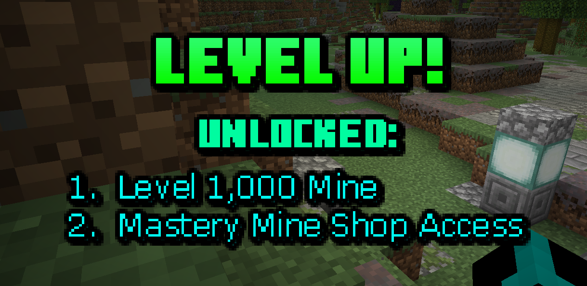

- One opportunity players on Atomix had was the ability to acquire resources, upgrade their mining gear, and gain access to new mines on the server.
- Levels were climbed by mining blocks and earning progress until reaching ever increasing progress requirements.
- In doing so, players gained access to new powerups and upgrades that helped them climb levels faster and become a true competitor on the server.
